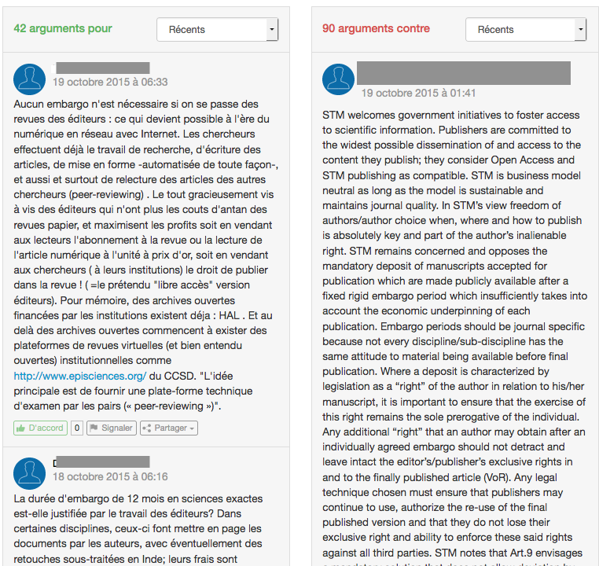

Mapping Open Access/Science
controversies:
the case of the French « digital bill » consultation
Celya Gruson-Daniel
(Centre Virchow Villermé / COSTECH-France)/ LabCMO-Québec)
Constance de Quatrebarbes
(ISC-IDF CNRS/ CSI-i3 Mines-Paris-Tech)

The New Digital Republic bill :
A « turning point » in France for Open Access/Science research policy
The « Digital Republic » bill
30 articles & 3 main objectives :
- Wider data and knowledge dissemination
- Equal rights for Internet Users
- Fraternity through an inclusive digital society
Open Access
1 article : Article 9
1 objective:
“foster free access to the public sector research work”
The online consultation in October 2015 :
an “unprecedented” initiative in the legislative process
From September 26th
to October 18th 2015
Votes: 147.709
Contributions: 8.501
Participants: 21.329
Version 0: Governement
Votes in favour / against / inconclusive
New versions :
108 propositions for article 9
Comments in favour/ against
A Science & Technologies and
Communication Studies perspective
Study of controversy related to Article 9 (Open Access)
- Who were the main stakeholders who took part in the debate related to Open Access policy?
- What were the key elements of the debate ?
- What can we learn about the stakeholders and their conception of Open Access but also Science ?
- What were the main strategies used by these stakeholders to impose their own opinions ?
Conceptual and methodological approach: The social world/arenas Framework (Strauss, 1978) / Situational Analysis (Clarke, 2005)
Methodology : Open Research
Ethnographic approach:2nd generation ethnography /
Ethnography for the Internet
(Hess, 2001) (Hine, 2015)
+
Digital sociology approachDigital Methods /
Mapping Controversies
(Roger, 2013) (Munk, 2014 ; Plantin 2014 ; Venturini et al. 2014, Baya-Laffite et Cointet 2015)
Open Research
- Collaborative format => hackathon République Numérique
- Open and collaborative software (Github, Zotero)
A mixed method approach :
The use of digital methods to support qualitative analysis
Network Analysis /Controversy mapping
Production of a map based on the similarity of votes between participants (7 similar votes)
↻
Qualitative Analysis
- Corpus :
- Main profiles on the map
- 26 Versions most voted or commented (title-explanations-comments)
- Mailing lists and other online media.
- Ethnographic approach since 2013
=> Characteristics of the main communities
=> Description of their vote strategies
Mapping Methodology
'Openscience4S' Github RepositoryMap of the participants based on their similarity of votes
Treshold : 7 similar votes Partition based on the modularity- Communities based on :
- Professions in the research system (IST, researchers, publishers, members of NGOs)
- Research fields (STM and SHS)
Key elements of the debate:
Modalities of Open Access/ Science :
- The length of embargo (12-24 months vs 6-12 months)
- Definition of a public scientific resource
- Data :
- Text and Data Mining (copyright exception) for SHS
- Open data research (STM)
Legal aspect :
- Open Access : rights or duties ?
- Exclusive copyright session or not ?
- Use of free licences ?
Organisation of the research system :
- Survival of SHS French publishers
- Role of national, institutional repositories
Specificities:
- Open Access in Social Sciences and Humanities
- Green Open Access or alternative models (Freemium but not Gold Open Access)
- Importance of the State
Communities and
conceptions of Open
Meanings for Openness :
FREE
- online access, free as freedom » + licences
- philosophical argument
- (culture libre)
OPEN
- online access, free as « free beer »
- pragmatic argument
- (economical advantages)
Conceptions of Openness :
Knowledge
- science is universal
- science should be reproductible (transmission)
- science should be independant from publisher
=> Commons & licences
Research System
- competitiveness for TDM
- Efficiency of the alernative model
- Adapted in a digital environnement
=> Business model & economic transition studies
Strategies
to impose a specific concept of openness and a vision of research
Communication
strategies:
- To broaden audience : general media in France
- To target researchers : mailing lists etc.
- Consortium of stakeholders and co-optation
Voting
strategies:
- Binge voting
- Family voting
- Multi-account
Discourse
strategies:
- Use of rhetorical discourse : pathos (« traditional publishers »
- Imposition of new idiomes (accès ouvert vs libre accès)
Next Steps
Network Analysis
/Controversy mapping
Qualitative Analysis
- Main profiles on the map
- 26 Versions most voted or commented (title-explanations-comments)
- Mailing lists and other online media
↻
Interviews
Discussion on the mapTextual Analysis
Sentimental analysis, top keywords/participants analysis, mining mailing listFew remarks
- Online world not a real world
- A technical and controled infrastructure for contribution
- On the use of digital methods and interpretation